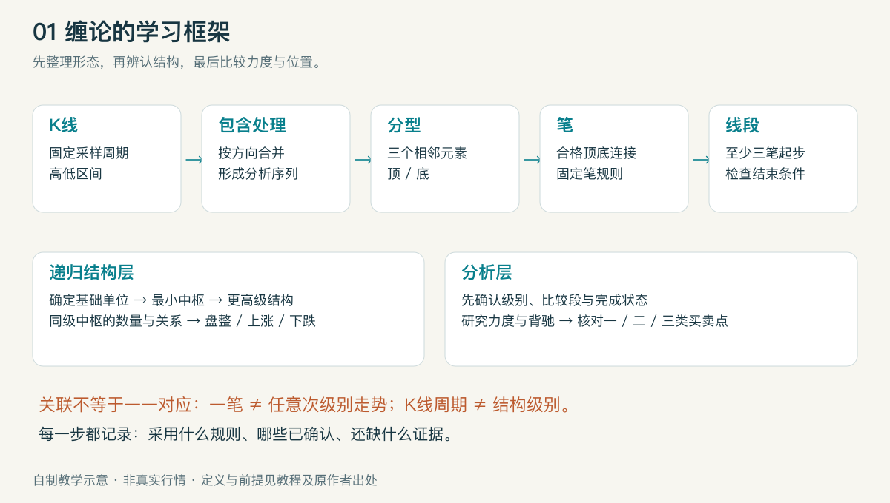
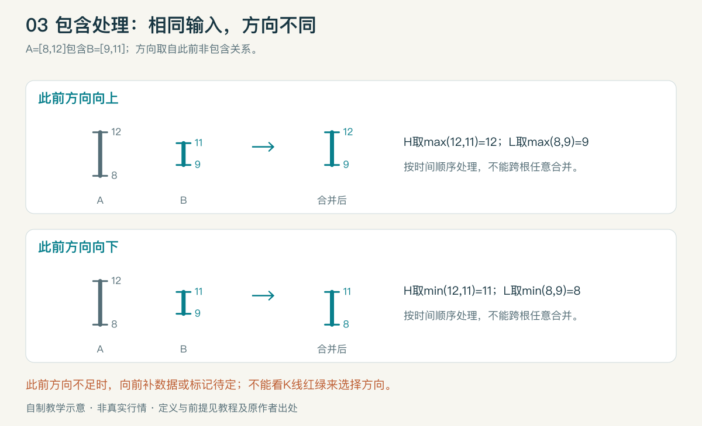
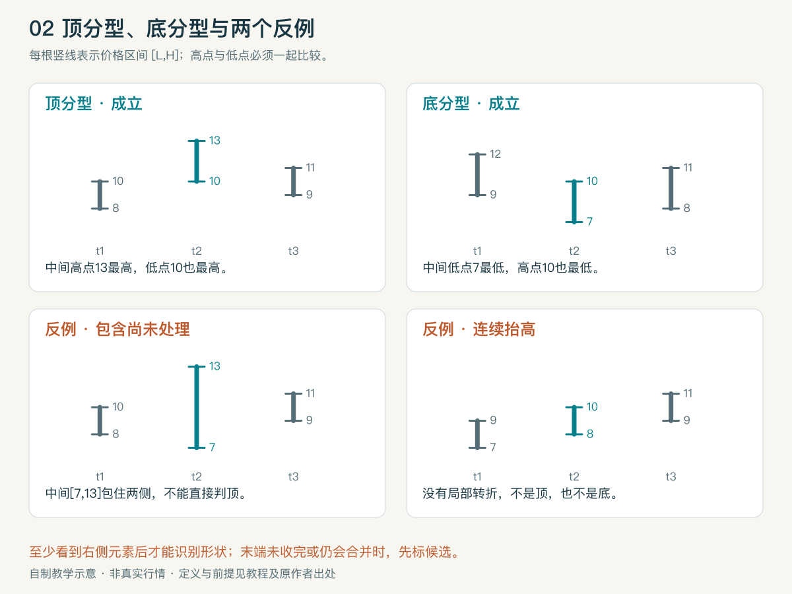
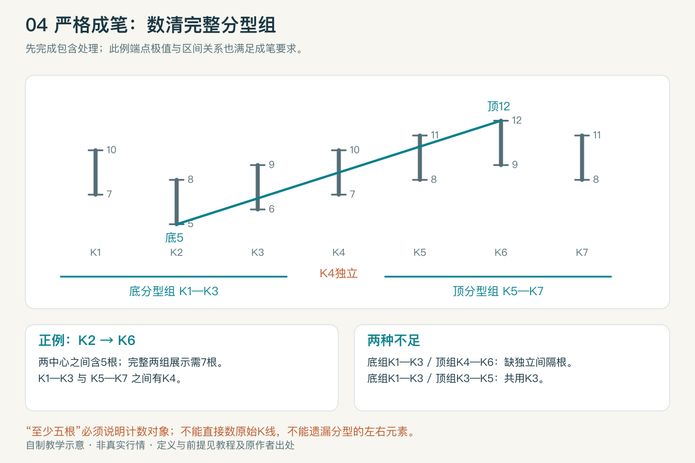
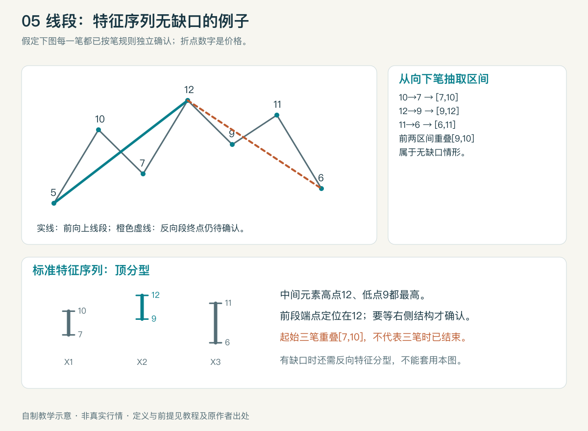
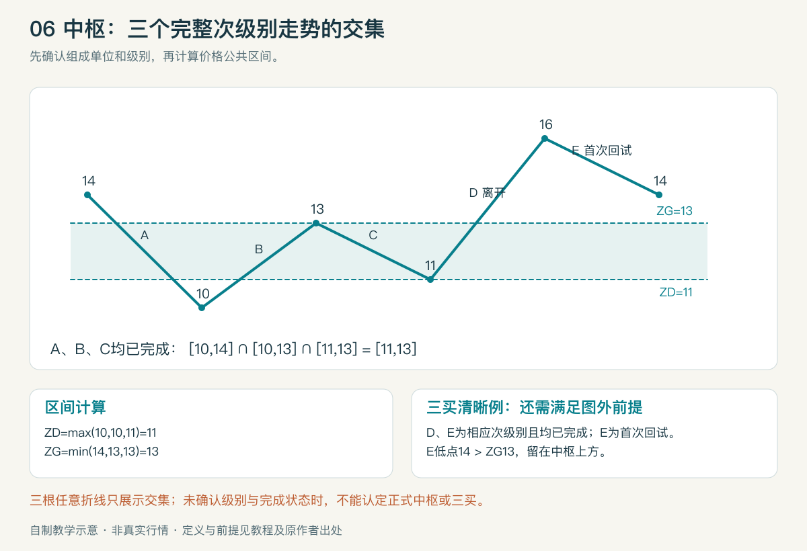
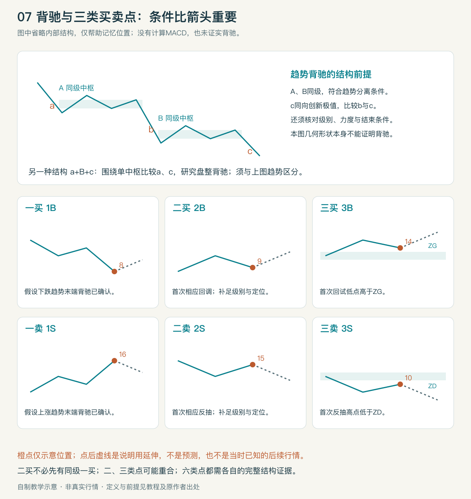

缠论基础学习入口
知识编号：K-CHAN-001｜版本：v1.0｜来源核验：2026-09-19｜整理：2026-09-20｜Owner：knowledge-ingest
目标：看懂缠论框架，解释基础术语，并能依照条件判断图例。用户原文“险段”统一为“线段”。
| 学习材料 | 用途 |
|---|---|
| 一体化阅读页 | 离线阅读、搜索术语、查看图例；由下列 Markdown 派生 |
| 基础教程 | 按学习顺序理解整体框架 |
| 术语映射表 | 逐项查定义、条件、联系、误区与原文 |
| 练习与答案 | 12组判定练习，先做后对照 |
| 来源与口径说明 | 原作者文章、版本差异、证据边界与项目关系 |
| 本地验证记录 | 文件、链接、图表与阅读页检查结果 |
建议学习顺序
- 先读教程第1—3节，只练高低价、包含关系和顶底分型。
- 再学笔与线段，能说清“出现候选端点”和“端点已确认”的差别。
- 接着学中枢、级别与走势类型；每次都说明分析对象的级别。
- 最后学力度比较及三类买卖点，并完成练习。
阅读口径
本文解释原作者理论，不构成当前个股买卖建议，也不验证该理论的收益或胜率。所有图表和数字均为自制教学示意，不是真实行情；图中省略内部结构的地方有明确假设。原文的绝对获利表述不作为本教材的实证结论。
“全部定义”指本次基础框架及必需前置术语，不等于收录108课中所有哲学、均线、资金管理与进阶术语。本文的定义集中在映射表，教程负责解释与演示。
可复用学习方法
每次标图写下：数据周期与复权方式、包含处理方向、笔的版本、结构级别、判断时点、成立条件、尚缺证据。规则变化时另存口径说明，不能为了让某张图成立而临时换规则。
与项目的关系
当前项目已有缠论算法及旧教学SVG；本专题为独立、可追溯的学习资料。未改动产品代码、行情数据、交易信号或生效需求。可能需要后续核验的实现差异见来源说明。
缠论框架基础教程
适合零基础读者｜v1.0｜2026-09-20｜术语映射表｜来源
1. 先看整体：它试图描述什么
可以把学习任务分成三层：先整理价格形状，再辨认结构，最后比较力度与位置。这是一种教学组织方式，不是原文中的新定理。

下层的分型、笔、线段帮助整理图形；中枢、走势类型与级别构成另一套递归结构。二者有关联，但不能机械地写成“一笔等于一个小级别走势、一段等于一个大级别走势”。实践中选定基础观察尺度，再用线段建立最小中枢结构，之后递归组合。第63课、第83课
初学时只回答四个问题：现在看到什么结构？按什么规则划分？已经确定什么？还缺什么后续信息？不要一开始就猜下一根K线涨跌。
2. K线与包含关系：先把输入整理好
K线记录一个时间单位的开、高、低、收。这里先只看最高价H、最低价L；K线实体颜色并不决定分型。
如果相邻两根的高低价区间一个包住另一个，须先处理包含关系。方向取自此前已确定的非包含关系，不能按当前K线是红色还是绿色决定。向上处理取两根中较高的高、较高的低；向下处理取较低的高、较低的低。应从左到右逐次合并；包含关系不能任意跨根传递。第65课

自制算例：A=[8,12]、B=[9,11]。已知向上时合为[9,12]；已知向下时合为[8,11]。合并后的区间是分析用数据，不能冒充真实发生过的一根成交K线。图表左端若缺少先行方向，先向前取更多数据或标记“方向待定”，不要偷偷默认向上。
3. 分型、顶分型与底分型
分型是包含处理后，由相邻三个价格区间形成的局部转折形状，包括顶分型、底分型。设三个区间的高低点为(H1,L1)、(H2,L2)、(H3,L3)，本教材用严格比较的清晰例子：
- 顶分型：H2>H1且H2>H3，同时L2>L1且L2>L3。
- 底分型：L2<L1且L2<L3，同时H2<H1且H2<H3。
这里的“顶”是局部形态名称，既不是全市场最高点，也不自动确认趋势结束。三个区间一起构成分型，真正的极值位于中间区间。定义依据第62课；等高、等低及包含边界说明见口径说明。

图中每根竖线表示[L,H]，不用实体颜色干扰判断：
| 例子 | 三个区间，按时间从左到右 | 判断 |
|---|---|---|
| 顶分型 | [8,10]、[10,13]、[9,11] | 中间高点、低点都最高 |
| 底分型 | [9,12]、[7,10]、[8,11] | 中间高点、低点都最低 |
| 中间只创最高价 | [8,10]、[7,13]、[9,11] | 中间包住两侧，须先处理包含，不能直接叫顶分型 |
| 连续抬高 | [7,9]、[8,10]、[9,11] | 上行排列，没有局部顶底 |
判断时间要晚于极值时间。 中间K线在t2发生极值，但至少要看到右侧t3才能识别形状。右侧K线未收完，或末端仍可能被包含处理改变时，只能标候选。教材采用收线及后续结构确认的保守观察方式，禁止把事后箭头放回t2当成当时已知信号。
4. 笔：把合格的相邻顶底连接起来
笔的定义和分型取舍见映射表。本教材采用第62、77课的严格成笔口径：一顶一底、两组不共用K线、两分型之间至少留一根独立的处理后K线；同时满足端点极值及区间关系。连续同类候选需要按极值取舍，不是看到任意两枚箭头就连线。第77课

图中K2是底分型中间根，K6是顶分型中间根；两组分别为K1—K3、K5—K7，K4独立。完整展示两组分型需7根；从端点中间根K2数到K6则是5根。两种数法不同，不能只说“满足五根”而省略计数对象。新笔、旧笔等名称若无明确规则，无法直接比较结果。
5. 线段：由笔组成，还需要结束条件
线段至少含三笔，起始三笔须有重叠区间；“三笔重叠”并不等于该线段已结束。向上线段观察向下笔组成的特征序列，向下线段则观察向上笔。处理同一特征序列内的包含后，再判断对应分型。第65课、第67课

这个自制例子假定每一笔已按底层规则确认：5→10→7→12→9→11→6。向下笔对应[7,10]、[9,12]、[6,11]，构成特征序列顶分型，前两个区间有重叠。满足该情形时，前向上线段终点定位在12；识别依据要等右侧结构出现。后向下线段仍用虚线表示尚未确认终点。
若分型的第一、第二特征元素之间有缺口，还须检查从候选转折点开始的反向结构是否形成相应特征分型；不能照搬无缺口结论。特征序列缺口不是普通跳空缺口。包含处理仅适用于符合条件的同一序列元素，详见第71课；其末图在第81课有更正。
6. 中枢：共同经过的价格区间
先确定级别和组成单位。正式中枢用连续、已完成的次级别走势类型的公共重叠定义。三个区间为[L1,H1]、[L2,H2]、[L3,H3]时，可计算下界ZD=max(L1,L2,L3)、上界ZG=min(H1,H2,H3)。下界高于上界则没有公共区间。本教材采用ZD<ZG的清晰例子；相等情况单独记录边界口径。第18课

算例中A、B、C的区间为[10,14]、[10,13]、[11,13]，共同区间是[11,13]。前提是A、B、C确为对应次级别的完整走势；若只是随便画的三根折线，只能说明区间交集，不能据此认定正式中枢。基础线段构造的最小中枢，与“三根任意日K线重叠”也应区分。第83课
后面仍围绕原区间波动，研究中枢延伸；出现新中枢，研究新生及两者关系；外围波动重叠可能形成更高级别结构。判断趋势不能只看两个彩色核心框分开，还要检查相关波动范围。第20课
7. 走势类型和级别：说明你在观察哪一层
走势类型分为上涨、下跌、盘整。以同一结构级别讨论完成的走势：只有一个中枢是盘整；两个或以上同向、符合分离条件的中枢构成趋势，方向区分上涨与下跌。第17课、第18课
“盘整”不等于价格原地不动；一个只有一个中枢的走势，也可能走出很大的涨幅。走势仍在发展时，最好写“目前只识别出一个本级别中枢”，不要提前宣布整个走势已完成。
K线周期是数据采样单位，结构级别是递归层次，两者不能简单画等号。打开30分钟图，只说明观察工具变了，不能保证里面所有结构都是30分钟级别。第63课
8. 背驰：先有可比较结构，再谈力度
可以用“价格继续向原方向走，推进力度却减弱”建立直觉；正式判定要补足趋势、级别、比较段及结束条件。典型结构写作a+A+b+B+c，A、B是同级中枢；在符合趋势前提、c创出同向新极值等条件下，比较最后中枢前后的b和c。第37课

MACD可用来辅助观察柱面积及黄白线状态，但不是定义本身。比较哪两段须先由结构确定，不能在图上任选两个小柱子。参数、时间窗口、柱值符号和分段起止必须一致；本图没有计算MACD，也没有据此证实任何背驰。第24课、第50课
围绕单个中枢的同向运动也能比较力度，这类推广称盘整背驰；不能拿它替代本级别趋势背驰。后续还可能延伸原中枢、扩大结构或转向，不能从“减弱”直接推出大牛市。第27课、第29课
9. 买卖点：是有条件的结构位置
六类定义集中在映射表。先记用途：第一类研究趋势末端；第二类研究转折后的首次相应次级别回试；第三类研究离开中枢后的首次次级别回试与边界关系。
早期课程常从一买后首次回调解释二买；第53课补充了小级别转大级别的情况，因此“同级别一买必须先出现”不能作为二买的通用硬条件。二买、三买也可能重合，数字并非每次都顺次出现的三次操作指令。第21课、第53课
在上一节中枢算例中，假设向上离开D、随后首次回试E均满足次级别及完成条件，E最低14高于ZG=13，是清晰的三买位置；最低12.5已回到中枢，不能算这个中枢的清晰三买。仅突破13、尚无E，仍缺回试证据。卖点按相反方向理解。恰好等于边界的情况见口径说明。
实际识别必须同时记录“形态端点时间”和“足以确认它的时间”。任何回测若使用尚未出现的右侧数据，却把交易安排在端点当天，就存在前视问题。
10. 用一张检查卡完成初步分析
- 固定数据：证券、周期、复权、缺失记录、截止时间。
- 处理包含，标出候选分型和确认依据。
- 固定成笔规则，再判断线段；分别标已确认与待确认。
- 确定基础单位和递归级别，计算中枢及相关波动范围。
- 描述目前的走势结构，选择可比较的同向运动。
- 核对背驰或买卖点的全部前提，缺一项就写“未确认”。
缠论基础术语映射表
范围：基础框架和必要前置概念，共52项。定义依据原作者正文，通俗解释和数值例子为本教材改写；本文不是108课所有术语的辞典。读表时连同条件一起读，不能只拿一句通俗解释标图。
符号：H为高价，L为低价；[L,H]为价格区间。以下三元素默认已完成必要的包含处理。来源编号链接到作者原文，完整元数据见来源说明。
输入与分型
| 术语 | 通俗解释 | 定义与判定条件 | 关联概念 | 示例与常见误区 | 来源 |
|---|---|---|---|---|---|
| 01 K线 | 一个时间单位的价格摘要 | 通常记录开、高、低、收；本教材几何判定主要使用高低区间 | 采样周期、包含 | 阳线不必是向上关系，阴线不必是向下关系 | 62 |
| 02 K线周期 | 按多长时间汇总一根 | 如1分钟、日线，是数据采样尺度；不是结构级别的充分判据 | 走势级别 | 在30分钟图里仍可能看到多个结构层次 | 63、77 |
| 03 包含关系 | 相邻区间一个包住另一个 | 一根的H不低于另一根且L不高于另一根，或反向；边界相等也须一致处理 | 包含处理、分型 | [8,12]包含[9,11]；不能跳过包含直接找顶底 | 65 |
| 04 包含处理 | 把会干扰形状判定的区间合并 | 先确定方向；向上取较高的H和较高的L，向下取较低的H和较低的L；按时间顺序处理 | 分析K线、处理方向 | [8,12]与[9,11]向上合为[9,12]，向下合为[8,11] | 65 |
| 05 处理方向 | 决定合并时保留哪侧边界 | 根据此前已确立的非包含相邻区间关系判断，不用实体颜色替代；左侧信息不足则待定 | 包含处理 | 同一对包含区间可能得到不同的合法结果 | 65 |
| 06 分析K线〔教学用语〕 | 合并后用于结构分析的区间 | 包含处理后的序列元素；须保留其与原始K线的对应关系 | 分型、笔 | 合并区间不一定是一根真实成交K线 | 65，教学命名 |
| 07 分型 | 三个区间的局部转折形状 | 相邻三个处理后元素构成顶或底形态；须同时检查高点和低点 | 顶分型、底分型 | 看中间根颜色或只比收盘价都不够 | 62 |
| 08 顶分型 | 中间整段价格区间向上突出 | H2>H1、H2>H3，且L2>L1、L2>L3；等值须先依包含口径处理 | 顶、向下笔候选 | [8,10]、[10,13]、[9,11]成立；中间仅最高价最高不够 | 62、65 |
| 09 底分型 | 中间整段价格区间向下突出 | L2<L1、L2<L3，且H2<H1、H2<H3 | 底、向上笔候选 | [9,12]、[7,10]、[8,11]成立；不等于行情必然上涨 | 62 |
| 10 顶与底 | 分型中间根的极值 | 顶取顶分型中间元素最高价；底取底分型中间元素最低价 | 笔端点 | 分型是三元素结构，顶/底是其中极值，二者不是同一对象 | 62 |
笔与线段
| 术语 | 通俗解释 | 定义与判定条件 | 关联概念 | 示例与常见误区 | 来源 |
|---|---|---|---|---|---|
| 11 笔 | 一次合格的顶到底或底到顶连接 | 本文取严格口径：相邻有效顶底交替，两分型不共用元素且组间至少留一根独立分析K线；顶端所属区间须有部分高过底端所属区间，顶价/底价分别为该笔对应极值 | 分型、线段 | 两组中心K2、K6，组间K4独立；不能只数原始K线 | 62、77 |
| 12 向上笔 | 从有效底走向有效顶 | 由满足成笔条件的底极值连到后续顶极值，端点体现该笔相应极值 | 向下笔 | 底价5到顶价12；不是看到任意低高点都能连 | 62、77 |
| 13 向下笔 | 从有效顶走向有效底 | 由满足成笔条件的顶极值连到后续底极值 | 向上笔 | 顶价12到底价6；一根阴K线不等于一笔 | 62、77 |
| 14 同类分型取舍 | 连续同类候选保留更有代表性的极值 | 顶接顶优先取更高顶，底接底优先取更低底，并继续检查成笔关系；不能让相邻已定笔端同类 | 候选端点、笔延伸 | 较低顶未必改变原向上笔终点 | 77 |
| 15 线段 | 有内部笔结构的一段走势 | 至少三笔，开始三笔有重叠；端点由相应破坏/特征序列条件确认 | 笔、特征序列 | 三笔只满足起始条件，不自动确认末端 | 65、67 |
| 16 向上线段 | 以向上笔开始的线段 | 按线段规则构造，研究其结束时观察其中向下笔的特征序列 | 顶分型特征 | 教学例5→10→7→12先形成向上结构 | 67 |
| 17 向下线段 | 以向下笔开始的线段 | 按线段规则构造，研究其结束时观察其中向上笔的特征序列 | 底分型特征 | 将向上线段规则按方向对称理解，不能省略确认条件 | 67 |
| 18 特征序列 | 从线段中抽取反向笔的区间序列 | 向上线段抽取向下笔，向下线段抽取向上笔；每笔用其高低区间表示 | 标准特征序列 | 它是笔的序列，不是原始K线序列 | 67 |
| 19 标准特征序列 | 对特征元素处理包含后的序列 | 按相应规则处理同一特征序列内的包含，再研究分型；跨边界合并须遵守细则 | 特征分型、线段破坏 | 不能把不同序列里看似包含的元素随意合并 | 67、71、81 |
| 20 特征序列缺口 | 相邻特征元素之间没有价格重叠 | 线段结束分类重点看对应特征分型第一、第二元素是否有缺口 | 线段破坏 | 缺口描述笔区间关系，不必发生K线跳空 | 67 |
| 21 线段破坏/结束确认 | 原线段何时可以固定端点 | 无缺口情形按标准特征分型确认；有缺口时还要核对候选转折后反向序列的相应分型。具体包含及边界依原文细则 | 线段、缺口 | 新反向笔出现，不自动等于线段结束；71课末图须结合81课更正 | 67、71、81 |
级别、中枢与走势类型
| 术语 | 通俗解释 | 定义与判定条件 | 关联概念 | 示例与常见误区 | 来源 |
|---|---|---|---|---|---|
| 22 走势 | 价格运动的总体称呼 | 一段价格演化；讨论其类型、级别与完成状态时才有更严格结构约束 | 走势类型 | 画出一条折线尚不足以证明它是完整走势类型 | 17、63 |
| 23 走势级别 | 结构递归中的层次 | 固定基础构造后，由较小结构组成较大结构；须能说明相邻层的组成关系 | 次级别、中枢 | 不把屏幕上的5分钟周期直接当成所有结构的级别 | 63、77 |
| 24 次级别 | 相对当前层紧邻的较低层 | 当前级别定义中使用的直接下一级结构；“更低”不一定就是“次级别” | 中枢、三买三卖 | 不能用任意一根笔替代一个完整次级别走势 | 17、53 |
| 25 中枢 | 若干次级别走势反复共同经过的价区 | 至少三个连续、已完成的次级别走势类型的重叠部分；先固定级别，最低基础构造另见条目28 | ZD、ZG、盘整、趋势 | [10,14]∩[10,13]∩[11,13]=[11,13]；三个任意折线不够 | 17、18 |
| 26 ZD：中枢下界 | 公共区间的下边 | 对构造中枢的三个区间取ZD=max(L1,L2,L3) | ZG | 示例max(10,10,11)=11；不是整个走势的最低价 | 18 |
| 27 ZG：中枢上界 | 公共区间的上边 | 对构造中枢的三个区间取ZG=min(H1,H2,H3) | ZD | 示例min(14,13,13)=13；不是整个走势的最高价 | 18 |
| 28 最小中枢构造 | 递归分析的基础起点 | 后期课程用选定基础尺度上的线段构造最小中枢，再逐层组合；须说明基础尺度与线段规则 | 线段、级别 | “笔中枢”是需要单独声明的实现口径，不自动等于原文正式中枢 | 63、83 |
| 29 中枢延伸 | 后续运动仍围绕原中枢 | 原核心区间保留，后续相应次级别运动继续与之发生重叠；须区别级别扩展 | 中枢扩张、新生 | 不把每新增一段都重新求全体交集，导致原框随意缩小 | 20 |
| 30 中枢新生 | 离开后形成另一个同级中枢 | 前一中枢被有效离开，后续结构形成新的同级中枢；还要检查两者波动关系 | 趋势、中枢扩张 | 价格创新高但未形成新中枢，不等于已出现第二中枢 | 20 |
| 31 中枢扩张/级别扩展 | 相关波动形成更高层结构 | 原文依中枢及外围波动关系讨论扩展，后续组合须满足高一级中枢条件 | 延伸、GG/DD | 两个核心框分开，也可能因外围波动重叠而扩展 | 20、63 |
| 32 GG、DD | 描述相关波动外沿的辅助量 | 第20课先定义与中枢形成方向一致的Z走势及其高低g、d，再取GG=max(gn)、DD=min(dn)；必须先固定该组Z走势 | ZG、ZD、趋势分离 | 不能随便取整屏最高最低替代；GG、DD不是ZG、ZD | 20 |
| 33 走势类型 | 对结构整体分类 | 上涨、下跌、盘整三种；分类必须注明级别及是否已完成 | 中枢、趋势 | “目前一个中枢”不等于未来一定不会发展出第二个 | 17、18 |
| 34 盘整 | 本级别只有一个中枢的完成走势 | 以同级结构计数，完成走势只有一个中枢 | 盘整背驰 | 可有很大涨跌幅；并非横着不动 | 17 |
| 35 趋势 | 同向推进的多个同级中枢 | 至少两个同向、满足分离条件的同级中枢；需核查外围波动关系 | 上涨、下跌、趋势背驰 | 只看斜率或两个色框分开，证据不足 | 17、20 |
| 36 上涨 | 向上推进的趋势类型 | 按同级中枢结构判断，后续中枢相对前者向上且满足分离条件 | 趋势 | 几根阳线不构成形式上的上涨走势类型 | 17、20 |
| 37 下跌 | 向下推进的趋势类型 | 与上涨方向相反，仍须满足中枢数量及分离条件 | 趋势 | 创新低不自动证明已有本级别下跌趋势 | 17、20 |
力度与背驰
| 术语 | 通俗解释 | 定义与判定条件 | 关联概念 | 示例与常见误区 | 来源 |
|---|---|---|---|---|---|
| 38 背驰/趋势背驰 | 趋势继续推进，后段力度却弱于可比前段 | 须先有本级别趋势、正确比较段和相应完成条件；典型a+A+b+B+c中考察b、c，c创同向新极值且力度弱于b | 第一类买卖点、MACD | 随意两个波峰的指标减弱，不足以证明缠论背驰 | 15、24、37 |
| 39 盘整背驰 | 对单中枢相关同向运动做力度比较 | 将背驰的力度比较方法推广到中枢震荡相关运动，如a+B+c的a、c；须限定级别和区间 | 盘整、背驰 | 不是本级别趋势背驰；可能继续原中枢震荡 | 27、53 |
| 40 区间套观察〔进阶入口〕 | 在大结构的关键区间内逐层观察更细结构 | 先在所选级别确定待定位区间，再按更低层结构缩小观察范围；每一层仍须满足自身条件 | 背驰段、级别、定位 | 不能从任意小级别底分型直接推出大级别转折；本教材仅作入门说明 | 53 |
| 41 背驰段 | 进入了需要重点检查背驰的运动段 | 是待分析的结构区间，不等于已经确认段内最终背驰点；可进一步观察内部结构 | 区间定位、第一类点 | 进入背驰段后仍可能继续创极值 | 27、53 |
| 42 MACD辅助判断 | 用指标辅助比较运动力度 | 原文使用柱面积及线的位置等辅助判断；先定结构，再固定参数、区间和比较方式 | 背驰、盘整背驰 | 面积减小只是辅助证据，极端快速走势也有局限 | 24、25、50 |
买卖点
以下均须注明级别，且不能把尚未完成的回试当成已经确认的点。二类点列出早期典型情况和第53课推广；三类点用严格越过边界的清晰例子，等值问题见来源说明。
| 术语 | 通俗解释 | 定义与判定条件 | 关联概念 | 示例与常见误区 | 来源 |
|---|---|---|---|---|---|
| 43 第一类买点（1B、一买） | 下跌趋势末端的背驰位置 | 本级别下跌趋势在末端形成相应背驰；需确认结构、比较力度及定位条件 | 趋势背驰、一卖 | 下跌中的任意底分型不是一买 | 21、24、53 |
| 44 第一类卖点（1S、一卖） | 上涨趋势末端的背驰位置 | 本级别上涨趋势在末端形成相应背驰；方向与一买相反 | 趋势背驰、一买 | 仅创新高后出现阴线，不足以确认一卖 | 21、53 |
| 45 第二类买点（2B、二买） | 低点后首次相应次级别回试的位置 | 典型为一买后次级别上行再首次次级别回调；53课推广为低点后次级别上、下，不创新低或出现相应盘整背驰，须完成回试定位 | 一买、三买、小级别转大级别 | 低点8→反弹12→回调9只是结构示意；尚需证明级别与完成。同级别一买不是通用必要前提 | 21、53 |
| 46 第二类卖点（2S、二卖） | 高点后首次相应次级别反抽的位置 | 典型为一卖后次级别下行再首次次级别反抽；53课推广为不创新高或出现相应盘整背驰，须满足回试及定位条件 | 一卖、三卖 | 高点16→回落12→反抽15需补足结构证据，不是任意较低高点 | 21、53 |
| 47 第三类买点（3B、三买） | 向上离开中枢后，首次次级别回试留在其上方 | 次级别走势向上离开，随后首次次级别回试不回到中枢；本文清晰判例取回试低点>ZG。离开与回试均须满足对应级别及完成条件 | 中枢、ZG | 中枢[11,13]，离开到16后首次回试14；若跌到12.5则不成立 | 20、21 |
| 48 第三类卖点（3S、三卖） | 向下离开中枢后，首次次级别反抽留在其下方 | 次级别走势向下离开，随后首次次级别反抽不回到中枢；本文清晰判例取反抽高点<ZD | 中枢、ZD | 中枢[11,13]，向下离开到8后首次反抽10；未反抽不能仅凭跌破称三卖 | 20、21 |
使用中的状态与时间
以下是教材和实际标图必需的操作记录术语，不宣称为原作者新增定理。
| 术语 | 通俗解释 | 定义与判定条件 | 关联概念 | 示例与常见误区 | 来源 |
|---|---|---|---|---|---|
| 49 候选结构〔教学用语〕 | 形状正在形成，证据还不够 | 至少一项确认条件未满足；应列出缺的右侧数据、完成状态或级别证据 | 分型、笔、线段 | 不把候选箭头当作已确认交易信号 | 基于62、67的记录约定 |
| 50 已确认结构〔教学用语〕 | 截至某时点满足所选规则 | 必须绑定数据截止时间、规则版本和可见证据；改变输入或规则须重新核验 | 候选结构 | “确认”不等于保证收益，也不等于任何后续结构都不会延伸 | 基于62、67，教学约定 |
| 51 端点时间〔教学用语〕 | 极值发生的时间 | 形态中被标记的极值对应原始时间 | 确认时间 | 顶分型中间根t2是极值时间 | 基于62，教学约定 |
| 52 确认时间〔教学用语〕 | 首次拥有足够证据的时间 | 右侧结构及其他必要条件具备的最早可判定时刻；实际交易还受收线、延迟影响 | 前视问题、端点时间 | 至少看到t3才能判断t2顶分型；不能把t3信息用于t2的回测交易 | 基于62、67，教学约定 |
缠论练习与答案
共12组。全部数据为自制教学数据；除题目明确给出的条件外，不自行补出隐藏的走势、力度或完成状态。先写判断、条件和依据，再看文末答案。
题目
- 辨认分型。 三组区间分别为：A=[8,10]、[10,13]、[9,11]；B=[9,12]、[7,10]、[8,11]；C=[7,9]、[8,10]、[9,11]。假设均已完成包含处理与收线，各是什么形态？
- 识别反例。[8,10]、[7,13]、[9,11]中间最高价13最高，能否直接判顶分型？若只知这三根，应先补查什么？
- 处理包含。 相邻A=[8,12]、B=[9,11]。此前方向向上时合成什么？此前向下时呢？没有先行方向时能否任意选择？
- 严格成笔。 包含处理后，底分型组为K1—K3，顶分型组为K5—K7，中间K4独立，端点极值及区间关系合格。成笔吗？若顶分型改为K4—K6，或K3—K5呢？
- 数K线。 上题第一种情况，两端中间根K2到K6含几根？完整画出两组分型又需几根？为什么“至少五根”单独拿出来可能误导？
- 线段确认。 已确认的笔端点为5→10→7→12→9→11→6。起始三笔的公共区间是什么？向上线段的三个特征区间是什么？对应哪类分型、是否有第一第二元素缺口？由此定位哪一个端点，什么时候才有判断依据？
- 中枢计算。 连续三个已完成的次级别走势区间为[10,14]、[10,13]、[11,13]。求ZD、ZG。如果这些只是三根日K线，还能直接作相同级别中枢结论吗？
- 趋势与盘整。 同级别一个已完成走势只有一个中枢，但累计上涨30%，是否仍可能是盘整？若两个核心中枢框分开，是否就一定是趋势？
- 级别。 打开30分钟K线图，能否直接把每一笔叫作5分钟走势，把每一段叫作30分钟走势？还需要说明什么？
- 背驰证据。 价格创新低，MACD最近一片绿柱面积小于此前任意一片绿柱，是否足以确认本级别一买？如果只有一个中枢，应该区分什么概念？
- 三类买卖点。 中枢[11,13]。均假设离开与首次回试已满足次级别和完成条件：向上离开后回试低点分别为14、12.5、13；哪些是清晰三买？向下离开后反抽高点10是什么？若只有离开、还没回试，能否确认？
- 二买与时间。（a）低点8后完成次级别反弹到12，再完成首次次级别回调到9，按所选口径已补足定位证据；没有同级别一买是否必然排除二买？（b）顶分型中间根在周二，右侧根周三收盘才完成，回测能否在周二收盘使用“已确认顶分型”？
答案与解释
| 题号 | 答案 | 核验依据与容易出错之处 |
|---|---|---|
| 1 | A顶分型，B底分型，C均不是 | A高低点都在中间最高；B高低点都在中间最低；C持续抬高。见教程图02 |
| 2 | 不能直接判顶；先检查包含及此前处理方向 | 中间[7,13]包含两侧，原始三根不能直接用于无包含分型判定；本题信息不足以唯一重建分析序列 |
| 3 | 向上[9,12]；向下[8,11]；方向未知就待定或补数据 | 上取高高、下取低低，方向不能看红绿决定。见图03 |
| 4 | 第一种满足题设严格成笔条件；第二种没有独立间隔根；第三种共用K3 | 后两种均不满足本教材选定规则；它们不是对所有别的“笔版本”的裁定。见图04 |
| 5 | 端点中间根之间含5根，完整两组需7根 | 必须区分原始/分析K线、端点中心/完整分型组。仅凭5这个数字无法判笔 |
| 6 | 起始三笔交集[7,10]；特征[7,10]、[9,12]、[6,11]，顶分型，无该缺口；前段终点12 | 第一第二元素重叠[9,10]；须等右侧11→6这笔及必要结构确认，不能在刚到12时预知。此题假设各笔已经确认。见图05 |
| 7 | ZD=11，ZG=13；三根日K线本身不足 | 必须满足构成单位、连续、完成和级别条件；数值交集只是其中一步。见图06 |
| 8 | 可以是盘整；两个核心框分开仍不足 | 类型按结构定义，不按涨跌幅；趋势还要核查同级、方向以及相关外围波动的分离 |
| 9 | 不能直接等同 | 需说明基础构造、笔/段规则、递归组合及相应次级别走势是否完成；采样周期不替代结构级别 |
| 10 | 不足；应区分盘整背驰与趋势背驰 | 缺本级别趋势、结构匹配、比较段及结束证据；MACD仅辅助，任意面积比较不成立。一买还须有对应趋势末端结构 |
| 11 | 14是清晰三买；12.5不是；13保留为边界口径问题；10是清晰三卖；未回试不能确认 | 清晰例取低点>ZG、高点<ZD；等于边界不偷偷混用“未跌破”与“不触及”的不同读法。见来源说明 |
| 12a | 不必然排除 | 第53课解释小级别转大级别时，同级别一类点可能不存在，二类点仍有意义；本题已假设补足级别、完成与定位条件 |
| 12b | 不能 | 周二是端点时间，周三或更后才具备确认信息；提前用于交易就是前视。确认后是否能成交仍取决于真实时点与价格 |
自查结果如何解释
第1—5题对应形态基础，第6题对应线段，第7—9题对应结构，第10—12题对应力度、买卖点与时间。答错先回到相应节找缺失条件；全部答对只说明掌握本教材基础判例，不能据此推断实盘能力或获利概率。
来源与口径说明
作者：缠中说禅。优先依据作者新浪博客《教你炒股票》正文，区分早期概念介绍与后续补充、更正。来源访问核验日期为2026-09-19，教材整理完成日期为2026-09-20；不把经典文本包装成2026年新规则，也不宣称已穷尽当前网络上所有解释。
本次21个原作者页面请求中，20个成功取得正文，第72课所查地址返回404。404表示该地址未找到，并不证明该课不存在；本教材没有把它列为已核实的定义依据。网页可访问状态可能随后改变。原始访问元数据见sources.json，其中SHA-256对应当次下载的HTML，不是知识文档哈希。
原作者来源
| 课次 | 原文主题 | 原发表日期 | 本教材用途 | 核验 |
|---|---|---|---|---|
| 15 | 没有趋势，没有背驰 | 2006-12-08 | 背驰的趋势前提 | 正文已读 |
| 17 | 走势终完美 | 2006-12-18 | 中枢、盘整与趋势 | 正文已读 |
| 18 | 不被面首的雏男是不完美的 | 2006-12-26 | 中枢递归与区间公式 | 正文已读 |
| 20 | 中枢级别扩张及第三类买卖点 | 2007-01-05 | 延伸、扩张、边界及三类点 | 正文已读 |
| 21 | 买卖点分析的完备性 | 2007-01-09 | 三类买卖点及重合 | 正文已读 |
| 24 | MACD对背弛的辅助判断 | 2007-01-18 | 指标辅助方法 | 正文已读 |
| 25 | 吻，MACD、背弛、中枢 | 2007-01-23 | MACD适用边界 | 正文已读 |
| 27 | 盘整背驰与历史性底部 | 2007-02-02 | 盘整背驰、背驰段 | 正文已读 |
| 29 | 转折的力度与级别 | 2007-02-09 | 后续结构与转折级别 | 正文已读 |
| 37 | 背驰的再分辨 | 2007-03-16 | a+A+b+B+c的比较前提 | 正文已读 |
| 50 | 操作中的一些细节问题 | 2007-04-27 | 先结构后指标、观察尺度 | 正文已读 |
| 53 | 三类买卖点的再分辨 | 2007-05-23 | 二类点推广、级别与定位 | 正文已读 |
| 62 | 分型、笔与线段 | 2007-06-30 | 分型与严格笔 | 正文已读 |
| 63 | 替各位理理基本概念 | 2007-07-02 | 几何层与递归结构的关系 | 正文已读 |
| 65 | 再说说分型、笔、线段 | 2007-07-16 | 包含处理方向与线段起始条件 | 正文已读 |
| 67 | 线段的划分标准 | 2007-08-01 | 特征序列及有/无缺口两类情形 | 正文已读 |
| 71 | 线段划分标准的再分辨 | 2007-08-16 | 包含、边界与破坏细则 | 正文已读，末图须结合81课更正 |
| 72 | 本ID已有课程的再梳理 | 2007-08-21，目录信息 | 仅记录未取得正文的候选来源 | 404，不作定义依据 |
| 77 | 一些概念的再分辨 | 2007-09-05 | 笔的极值、分型取舍与级别 | 正文已读 |
| 81 | 图例、更正及分型、走势类型的哲学本质 | 2007-09-17 | 71课图例更正 | 正文已读 |
| 83 | 笔-线段与线段-最小中枢结构的不同心理意义1 | 2007-09-26 | 最小中枢与基础构造 | 正文已读 |
第三方原文目录仅帮助定位地址；不把目录或转述作为独立证据与原作者交叉“互证”。未收录原文整篇转载，正文为改写、教学解释及自制数值例子。
本教材采用的口径
| 易混淆点 | 原文关系或歧义 | 本教材处理 |
|---|---|---|
| 新笔、旧笔 | 网络名称不能唯一确定算法；62与77课在本次读到的严格条件下相互补充 | 明确完整分型组、不共用、至少一根独立分析K线，不用名称替代规则 |
| 等高、等低 | 价格可能相等，且关系会涉及包含处理方向 | 先按包含规则处理；图例使用严格不等式以避免模糊边界。左端方向未知时保留未知 |
| 中枢构造的基础 | 17课的初期说明涉及最低层K线，63、83课进一步整理线段与最小中枢关系 | 正式递归中枢使用完成的次级别走势；基础构造另行声明，不能直接泛化为三K或三笔 |
| 中枢交集为单点 | 教学中容易把所有重叠都默认成有宽度矩形 | 本例仅使用ZD<ZG；ZD=ZG作为需固定的实现边界，未据此对原文作统一裁定 |
| 线段结束 | 67课分有缺口、无缺口；71补充处理，81更正71末图 | 教程画无缺口正例；有缺口情形说明必要的反向分型条件，不冒充一张图覆盖全部细则 |
| 三买边界 | 20课定义使用“不跌破”措辞，同时围绕脱离中枢有“不触及”表述；若把中枢视为闭区间，等值实现会有差别 | 清晰正例取回试低点>ZG、反抽高点<ZD；等于边界时标出口径待统一，不混用不同不等式 |
| 二类点是否必须有同级一类点 | 21课常用一类点后的回试说明；53课明确解释小级别转大级别 | 同时保留典型解释及推广，不把同级一类点写成普遍必要条件 |
| 笔、线段、次级别走势 | 53课将次级别走势视作无内部结构的“线段”是观察抽象；62以后有严格几何线段 | 图上用折线表示次级别走势时明确假设，不将两种用语混为一谈 |
| MACD与背驰 | 24、25、50课把指标放在结构和辅助判断语境中 | 不以MACD死叉、金叉或两柱差直接定义缠论背驰 |
| 理论命题与投资结果 | 原文含绝对性和获利表述，但文本本身不是样本外收益检验 | 教材只解释理论结构；不报告未经实证的胜率、收益或当前交易信号 |
背驰的严谨比较还有层次条件：第37课讨论A、B同级，b的级别不高于c，c须具备相应次级别结构、同向新极值及与B的第三类点等前提。教学图只展示几何关系，未展开每段全部内部中枢，也未计算MACD，因此不能从图上独立推出真实背驰。具体应用应回读该课并完成内部验证。
项目关系与待核验项
范围是本项目金融知识专题，路径为docs/knowledge/finance/chanlun/。原有docs/requirements.md中的缠论算法需求及chanlun_core.py含项目自定的笔、中枢、信号实现口径。本次没有把“已有代码能输出”当成“符合原文全部定义”，也没有修改行情数据、产品算法、现行需求或别的任务成果。
后续若要把教材落实成程序，应另行核验：原始与分析K线的计数；候选和确认的时点；三笔重叠与线段/次级别中枢的区别；二类点推广条件；三类点等值边界；MACD窗口及前视问题。以上是待核验清单，不是已证实的产品缺陷，也不是本次新增生效需求。
入库方式与证据边界
本次为项目内文件知识库：Markdown为唯一正文源，目录索引供发现，HTML为派生阅读页，52行映射表供关键词检索。素材按金融/缠论隔离，不混入游戏资料。没有部署向量数据库、写入外部Notion或改动Codex长期记忆，因此不宣称完成RAG向量化或全局记忆注入。
阅读页搜索匹配术语及其定义、条件、例子；未命中应显示0条，不补造结果。所有配图为规则示意，与真实市场数据或实盘信号区分。若未来引入RAG，须继续按knowledge-ingest契约保存来源、范围、版本、分块和检索回执。
本地验证记录
验证日期：2026-09-20。结果：本次知识资料已完成本地文档、数值图例与浏览器功能核验。未进行交易算法回测，也不以教材检查代替实盘验证。
| 检查 | 结果 | 证据范围 |
|---|---|---|
| 内容完整性 | 通过 | 10节教程、52项连续编号术语、12组练习及答案；六类买卖点分别列项 |
| 来源可追溯 | 通过，有明确缺口 | 2026-09-19取得20篇原作者正文；第72课地址404单独标记，不作为已核实依据；见sources.json |
| 本地文件与链接 | 通过 | 静态检查阅读页、专题Markdown及上级索引的文件链接和中文锚点；无断链 |
| 图表数值 | 通过 | 独立复算顶底高低关系、向上/向下包含、中枢[11,13]、线段起始交集[7,10]和三类点清晰边界 |
| 图表显示 | 通过 | 7组SVG/PNG均成功渲染；逐张实际目检；修正中枢图页脚重叠后重新查看 |
| 浏览器图片加载 | 通过 | 本地阅读页中7张图片均加载完成且自然宽度大于0 |
| 术语搜索 | 通过 | 搜索“顶分型”显示6/52条相关记录；无匹配文本显示0/52；清空恢复52/52 |
| 导航与排版 | 通过 | 实际点击术语导航并读回；中文章节锚点在解码后均有对应目标；页面截图确认文字与搜索框正常 |
| 索引与隔离 | 通过 | 上级知识索引链接K-CHAN-001；范围为金融/缠论，不混入其他领域资料 |
教材边界：三买/三卖等于中枢边界、零宽度中枢、不同笔版本等差异均在来源说明列明；图中未展开的内部结构明确写为假设，没有把示意走势冒充真实行情或已确认背驰。
浏览器用于验收的临时服务仅监听本机。长期阅读入口为本目录的reader.html，可直接打开，正文、样式、搜索逻辑和图片不依赖外部CDN；点击原作者来源时才需要网络。用户主观学习效果与交易盈利能力不在本次验证结论内。
维护与重建
修改知识内容以Markdown为准，再派生阅读页。数值图的可编辑源为tools/build_figures.py和对应SVG。运行Python脚本生成SVG，然后使用现有Node运行时运行tools/build_reader.mjs；后者需要将环境变量CHANLUN_NODE_MODULES指向已安装的marked与sharp所在目录。无需安装新依赖。派生后须重新核对受改动的数字、图像与链接。